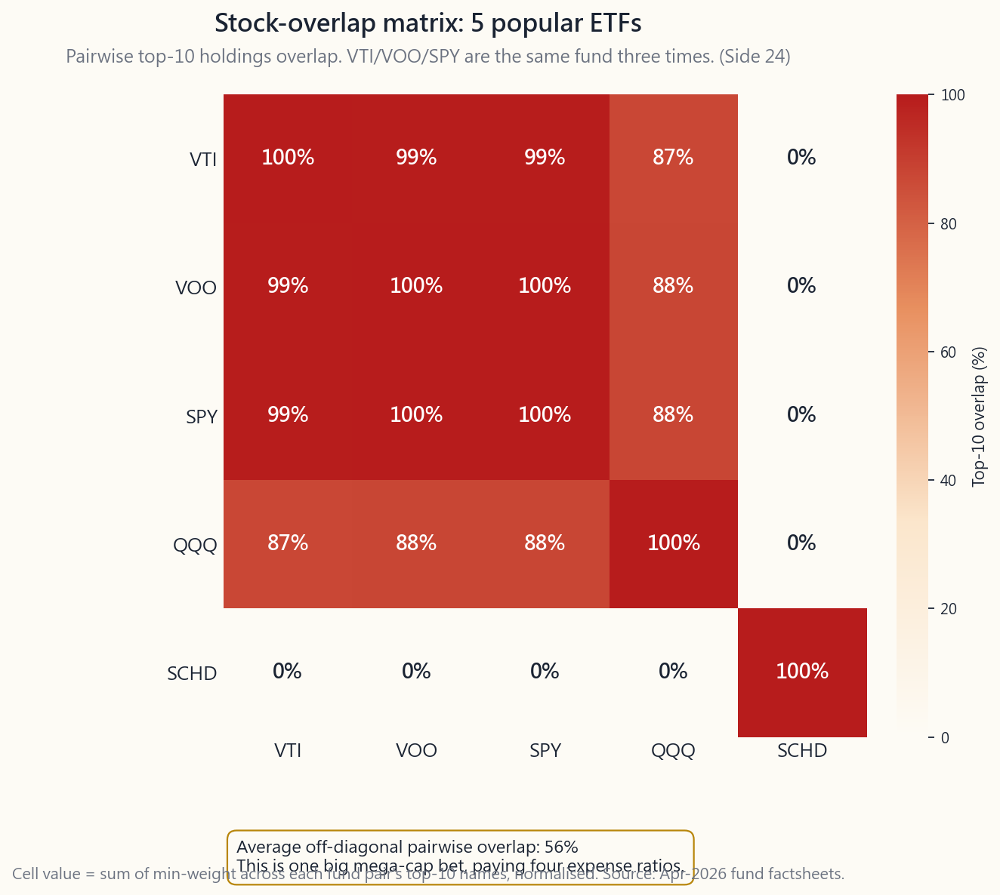
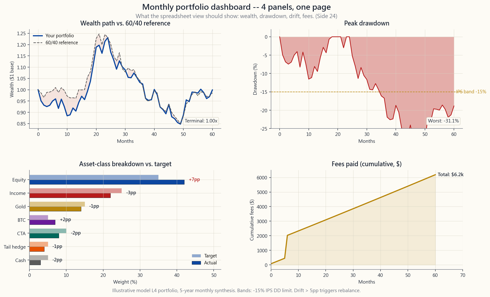

Side Lesson 24: Portfolio Monitoring Tools
1. Why This Is Important
The model from Week 52 ends at "build the portfolio." Real life starts there. A portfolio you cannot see clearly is a portfolio you cannot run. The job after the IPS is signed is to inspect — at most monthly, never daily — whether the thing you wrote down is the thing you actually own. That is what monitoring tools do.
from Week 52 will drift on its own. After one strong equity year the growth tranche bulges to 42% and the cash sleeve thins to 3%. Without a tool that measures drift against target — sleeve by sleeve — you cannot tell whether you have crossed the +/-5pp band that triggers a trim.
SCHD looks like five funds. The X-Ray says it is mostly one fund: AAPL, MSFT, NVDA, AMZN, META, GOOG appear in all five at high weight. Sector double-counting is the most common silent failure of retail portfolios, and it is invisible without a holdings-level pass-through.
$500k portfolio is $2,500 a year, every year, automatically — silently debited and never invoiced. The tools that aggregate every account and compute expense-weighted average ER are the ones that turn the abstract "fees matter" into a specific dollar number you can decide whether to pay.
better monitoring lets you check less. When alerts fire only on band breaches and the dashboard lives on a fixed monthly cadence, the urge to log into your brokerage every morning fades. The tool watches; you live your life. That is exactly the discipline of staying solvent long enough for the strategy to compound.
2. What You Need to Know
2.1 Portfolio Visualizer — the free institutional terminal
portfoliovisualizer.com is the single most useful free tool in the retail kit. Five modules deserve your attention:
- Backtest Portfolio. Enter weights and ticker list, pick a start date,
- Asset Class Backtest. Same engine, but with reconstructed broad asset
- Factor Regression. Runs Fama-French 3, Carhart 4, and FF 5 + momentum
- Monte Carlo. Forward simulation with capital-market assumptions you can
- Asset Correlations. Rolling and full-period matrices, with
The free tier covers all of the above. The paid tier ($30/month) adds optimization and historical Sharpe rolling charts; for a retail investor the free tier is enough indefinitely.
2.2 Morningstar Instant X-Ray — the overlap detector
X-Ray is the free tool buried inside a Morningstar account. Paste your ticker list and weights and it returns:
- Asset-class breakdown — how much US stock, intl stock, bond, cash, other
- Sector allocation — eleven GICS sectors, with the S&P 500 reference
- Region allocation — North America / Europe / Japan / Asia ex-Japan /
- Top 10 holdings — across the entire portfolio after fund pass-through.
- Stock overlap — a number between 0% and 100% that quantifies how much
If you take only one thing from this lesson it is the overlap number. A retail
portfolio of VTI + VOO + SPY + IVV reads as four funds and is in fact one fund
with a 99.5% overlap. The image script side24_overlap_detection.py walks
through a 5-fund example where the pairwise overlap heatmap shows ~60% top-ten
overlap on the diagonal cluster.

2.3 Empower (formerly Personal Capital) — the aggregator
Empower's free tools include an account aggregator that pulls from most US brokerages, banks, and 401(k) providers via Plaid. Once linked it runs three analytics that matter:
- Retirement Planner. Monte Carlo forward projection from your actual
- Investment Checkup. Asset-class breakdown across all accounts at once
- Fee Analyzer. The killer feature. Aggregates every fund's expense ratio
The catch: Empower's business model is a wealth-management lead funnel. Expect calls. Decline politely; the tools remain free.
2.4 Brokerage built-ins — Schwab, Fidelity, Vanguard
Every major US brokerage has shipped a portfolio-analytics dashboard in the 2020-2025 wave:
- Schwab Portfolio Checkup — pulls into the X-Ray engine via partnership
- Fidelity Portfolio Analysis — strong on tax-lot view and unrealised
- Vanguard Portfolio Watch — basic but free; useful if your portfolio is
Use the brokerage tool when you want to look at the accounts at that brokerage. Use Empower or X-Ray when you need the full cross-account view.
2.5 The DIY spreadsheet — the tool you actually run
Despite the polished web tools, most disciplined retail investors I know run a Google Sheet or Excel workbook as their primary monthly dashboard. Three reasons: it owns no opinions about your asset categories, it never changes its UX out from under you, and it works offline.
A minimum-viable monthly sheet has six columns: ticker, target weight, target
dollars, current dollars, drift in pp, action (trim / add / hold). Underneath
that, three computed cells: total portfolio value, expense-weighted ER, and
trailing-twelve-month return vs. a 60/40 reference. That's it. The image
script side24_dashboard_template.py shows what this looks like rendered as
four panels: wealth path, drawdown, asset-class breakdown, and rolling fee
spend.

GOOGLEFINANCE("VTI", "price") and friends pull live prices into Google
Sheets at 20-minute delay, free, forever. There is nothing the paid tools do
in their dashboard panes that a column of =GOOGLEFINANCE() calls cannot
replicate.
2.6 The monthly review checklist
The tool is useless without the cadence. Once a month, on a fixed day:
sentence written in a notes column.
or PV. Compare against the IPS-stated maximum drawdown.
percentage points of target? Any breach triggers a trim/add of just that sleeve, ideally directed via new contributions before any sales.
regression on your tilt sleeves (MTUM, AVUV, QUAL, USMV) and confirm beta to the named factor is still > 0.5 and t-stat > 2. Decay below that threshold for two consecutive quarters triggers the half-weight stop-rule.
for the year. Watch for advisor-managed accounts and fund-of-fund wrappers that slip in via 401(k) target-date defaults.
that day. Anything under stays untouched until next month.
The reason monthly cadence is right and daily is wrong is not laziness; it is structural. A modern portfolio — and the four-tranche stack from Week 52 is exactly this — is a barbell in shape: high-conviction safety on one end (cash, short Treasuries, gold, deep-ITM long-dated calls on names you actually want to own), asymmetric speculation on the other (the opportunistic sleeve, the tail-hedge sleeve, the option positions). The barbell only works if you let the safety end be safe. Daily checking re-introduces the disposition effect from Side 15 — the urge to trim the green and add to the red — into a sleeve that exists to not be touched. Worse, it turns the tail-hedge sleeve into a pricing-anxiety machine: a small option position whose purpose is to expire worthless 95% of the time becomes a quarter-by-quarter heartbreak the moment you put a daily P&L line under it. Monthly cadence is the policy that keeps the shape of the portfolio doing its job. The dashboard exists to enforce the gap between review days, not to fill them.
The interactive side24_dashboard.html lets you build a 5-ETF portfolio from
a 12-fund dropdown and see asset-class breakdown, expense-weighted average,
and pairwise top-10 overlap in real time — a working miniature of the retail
toolkit described above.
3. Common Misconceptions
five different framings of the same numbers, and the dashboard you check at 9am gets read; the four others rot. Pick one primary (spreadsheet or Empower), one analytics deep-dive (Portfolio Visualizer), and one overlap checker (Morningstar X-Ray). Stop there.
brokerage. The cross-account view — including the spouse's IRA, the prior employer's 401(k), and the HSA — is exactly what no single brokerage gives you. Aggregator or spreadsheet is the only way.
active retail traders find a near-monotonic relationship between login frequency and underperformance (Barber & Odean 2000). Set a fixed monthly day, do the checklist, close the tab.
VYM, DGRO, and NOBL look like four different income strategies. Run them through X-Ray: 50%+ holdings overlap because they all filter the same S&P 500 universe for dividend characteristics.
12b-1 + transaction costs inside the fund + bid-ask + advisory fee + account fees. Empower's fee analyzer surfaces the first; only Form ADV reading and tax-return inspection surfaces the rest.
future return distribution looks like the historical one. The macro regime changes every 30-40 years, so it won't. Treat the simulation as a sensitivity tool, not a probability forecast.
tier of Portfolio Visualizer adds optimization (which over-fits) and a few convenience features. The truth is in the free tier. Pay only when you've exhausted what it gives you.
Calendar-only rebalancing is fine in calm markets. In 2008 or 2020 a strict-calendar portfolio missed the 25-30% mid-year band breach where the real rebalancing premium lives. Hybrid (annual + 5pp band) captures both.
4. Q&A Section
Q1. How often should I actually log in? A. Once a month for the dashboard checklist. Once a quarter for the deeper factor regression and stop-rule check. Annually for the full IPS rewrite. That's it. More than this is cost without benefit.
Q2. Is Portfolio Visualizer's data accurate? A. For monthly total returns of US-listed ETFs back to inception, yes — it sources from CRSP and the funds' own filings. The asset-class reconstructions back to 1972 use academic indices (Fama-French, Damodaran-style splices) that are accurate in shape but not investable in real life. Use them for shape, not forecast.
Q3. Empower or a spreadsheet? A. Both. Empower for the cross-account aggregation and fee analyzer. Spreadsheet for the monthly drift check and sleeve action plan. They serve different purposes; the spreadsheet is your operating tool, Empower is your audit tool.
Q4. What overlap percentage is too much? A. As a working rule, any pair of funds with > 50% top-10 holdings overlap is double-counting. Either drop one or accept that you have one larger position in the shared names. The five-S&P-500-ETF portfolio is the reductio: 99.5% overlap, paying 4x the ER for the same exposure.
Q5. Should I pay for Morningstar Premium? A. No, for monitoring purposes. The X-Ray tool is free with a basic account. Premium adds analyst star ratings (which Morningstar's own studies show have little forward predictive power) and screener access. The free X-Ray pane is the only Morningstar product that earns a regular spot in the workflow.
Q6. Does the brokerage's "risk score" mean anything? A. No. Schwab, Fidelity, and Empower each have a proprietary "risk score" that combines vol, beta, and concentration into a single 0-100 number. The weights are opaque, the methodology is unverified, and the score is mainly a sales tool to flag accounts as candidates for managed services. Ignore.
Q7. How do I track tax-loss harvesting opportunities? A. Brokerage tax-lot view + spreadsheet. Sort lots by unrealised loss descending; any lot below cost by more than $500 and held outside the 30-day wash-sale window is a candidate. See Side Lesson 04 for the full TLH mechanics. No mainstream monitoring tool surfaces TLH well — the brokerage tax-lot screen is your primary source.
Q8. Can I automate alerts? A. Yes. Most brokerages let you set price alerts; combine with a Google Sheet that flags drift > 5pp in conditional formatting and emails you on trigger via a 10-line Apps Script. That's the entire automation budget. Going beyond it (real-time triggers, mobile push) is exactly the dopamine pump that undermines the discipline of staying solvent.
Q9. What about crypto holdings — none of these tools handle BTC? A. Empower aggregates Coinbase. Most others ignore crypto. The simplest fix: a manual cell in your spreadsheet for the BTC sleeve, refreshed monthly. The 5% sizing from Side Lesson 09 doesn't need second-by-second precision.
Q10. The dashboard says I'm 8pp overweight equity. Do I sell or wait? A. Sell — partially. The 5pp band trigger means action now, not "wait for year-end." Direct new contributions to the under-target sleeves first; if that doesn't close the gap within one month, sell down enough of the overweight sleeve to land back inside the band. Tax-lot pick the highest basis lots in taxable accounts; in IRAs there is no tax cost so trim freely.
補充課 24：投資組合監察工具
1. 為何此事重要
第 52 週的模型在「建立投資組合」一步結束。真實的人生從那裡才開始。看不清楚的投資組合，就是管不好的投資組合。簽署投資政策說明書之後的工作，是檢查——最多每月一次，絕不每天——你所寫下的，是否就是你實際持有的。這正是監察工具的用途。
2. 你需要掌握的內容
2.1 Portfolio Visualizer——免費的機構級終端
portfoliovisualizer.com 是散戶工具箱中最有用的免費工具。五個模組值得你深入了解：
- 回測投資組合（Backtest Portfolio）。 輸入比重和代碼列表，選擇起始日期，工具便會返回年化回報、波動性、最大回撤、夏普比率、索提諾比率、卡爾馬比率，以及逐年數據表。大多數交易所買賣基金最遠可回測至 1985 年的月度數據，部分系列透過互惠基金代理可追溯更早。你可以並排比較三個投資組合——這正是第 4、15 及 52 週在更改比重前要求你做的事。
- 資產類別回測（Asset Class Backtest）。 同一引擎，但使用重建的廣泛資產類別（美國大型股、美國小型價值股、已發展市場國際股票、新興市場、房地產信託基金、黃金、長期債券、短期國債），追溯至 1972 年。藉此可以將 60/40 或全天候組別，放在 ETF 時間窗口不涵蓋的 1970 年代通脹環境下進行壓力測試。
- 因子回歸（Factor Regression）。 針對任何代碼或投資組合，運行 Fama-French 三因子、Carhart 四因子，以及 FF 五因子加動量模型。輸出結果包括：阿爾法（附 t 統計量）、以及對市場、規模、價值、動量、質量、低波動性的貝塔暴露。這正是你證明因子傾斜確實發揮你所付出的較高開支比率應有效用的方法。
- 蒙地卡羅模擬（Monte Carlo）。 以你可以自行調整的資本市場假設進行前瞻模擬。適用於安全提款率壓力測試和回報次序的尾部測試。
- 資產相關性（Asset Correlations）。 提供滾動及全期相關性矩陣，窗口可由用戶自行調整。快速直觀地呈現第 19 週討論的相關性崩潰問題。
2.2 Morningstar Instant X-Ray——重疊偵測器
X-Ray 是免費工具，隱藏在 Morningstar 帳戶內。貼上你的代碼列表和比重，系統會返回：
- 資產類別細分 ——將基金展開至持倉後，你實際持有多少美國股票、國際股票、債券、現金及其他。
- 板塊配置 ——十一個全球行業分類標準（GICS）板塊，並附上標準普爾 500 指數作參考。
- 地區配置 ——北美、歐洲、日本、亞洲（日本除外）、拉丁美洲、中東、非洲。
- 前十大持倉 ——經基金穿透後，整個投資組合的前十大持股。這正是「我持有 VTI 和 SCHD」變成「我的股票倉位有 27% 集中在七隻美國超大型股」的地方。
- 股票重疊率 ——一個介乎 0% 至 100% 的數字，量化兩隻基金加權持倉中相同名稱的比例。
side24_overlap_detection.py 以一個 5 隻基金的例子，展示兩兩之間的重疊熱力圖，在對角線群集上顯示約 60% 的前十大持倉重疊。

2.3 Empower（前身為 Personal Capital）——帳戶整合平台
Empower 的免費工具包括帳戶整合功能，可透過 Plaid 連結大多數美國經紀、銀行及 401(k) 供應商。連結後，它會運行三項重要的分析功能：
- 退休規劃（Retirement Planner）。 根據你的實際當前結餘和供款比率，進行蒙地卡羅前瞻推算。
- 投資檢查（Investment Checkup）。 一次過覽所有帳戶的資產類別細分——這是單一經紀平台無法提供的跨帳戶視圖。與目標配置比較，並標示差距。
- 費用分析（Fee Analyzer）。 殺手級功能。按持倉規模加權整合每隻基金的開支比率，並報告在你投資年期內的費用美元影響。這個功能呈現出 0.65% 顧問費與 0.05% 自主管理投資組合在三十年間的差距，已讓比任何博客文章都更多的散戶投資者，選擇放棄全方位服務的顧問。
2.4 經紀商內置工具——Schwab、Fidelity、Vanguard
2020 至 2025 年間，每家主要美國經紀商都推出了投資組合分析儀表板：
- Schwab Portfolio Checkup ——透過合作關係接入 X-Ray 引擎，在你的 Schwab 登入頁面內提供板塊、資產類別及重疊視圖。
- Fidelity Portfolio Analysis ——在稅務批次視圖和未實現盈虧報告方面表現出色。其「與基準比較」面板提供整潔的滾動回報對比，可對比任何指數。
- Vanguard Portfolio Watch ——基本功能，但免費；若投資組合純為先鋒基金，十分實用。
2.5 自製試算表——你實際使用的工具
儘管有各種精緻的網絡工具，我所認識的大多數有紀律的散戶投資者，仍以 Google 試算表或 Excel 工作簿作為每月主要儀表板。原因有三：它對你的資產類別沒有任何預設立場，其使用介面絕不會在你不知情下更改，而且可以離線使用。
一個最精簡可行的每月試算表有六欄：代碼、目標比重、目標美元金額、當前美元金額、偏移百分點、行動（削減/增持/持有）。其下方有三個計算格：投資組合總值、費用加權開支比率，以及過去十二個月回報對比 60/40 基準。如此而已。圖片腳本 side24_dashboard_template.py 展示了以四個面板呈現的效果：財富路徑、回撤、資產類別細分，以及滾動費用支出。

GOOGLEFINANCE("VTI", "price") 等函數可免費、永久地以 20 分鐘延遲將即時價格導入 Google 試算表。付費工具儀表板的所有功能，一列 =GOOGLEFINANCE() 函數都能複製。
2.6 每月檢查清單
工具若沒有配合節奏使用，毫無用處。每月固定一天：
每月節奏才是正確選擇、而非每天，原因並非懶惰，而是結構性的。一個現代投資組合——第 52 週的四層架構正正符合這個描述——在形態上是一個槓鈴：一端是高確信度的安全資產（現金、短期國債、黃金、你真正想持有的股票的深度價內長期認購期權），另一端是非對稱投機（機會性組別、尾部對沖組別、期權倉位）。槓鈴的運作前提，是讓安全端真正保持安全。每天查看會將來自補充課 15 的處置效應——削減盈利倉位、加碼虧損倉位的衝動——重新引入一個本應不受干擾的組別。更糟的是，這會讓尾部對沖組別——那些存在目的就是九成五機率到期歸零的小型期權倉位——變成一台定價焦慮機器：一旦每天都看損益，這個倉位就會在每個季度都令人心碎。每月節奏正是讓投資組合的整體形態持續發揮功效的政策。儀表板的存在，是為了強制執行檢視日之間的空白，而非填滿它。
互動工具 side24_dashboard.html 讓你從 12 隻基金的下拉選單中組建一個 5 隻基金的投資組合，並即時查看資產類別細分、費用加權平均值，以及兩兩前十大持倉重疊情況——是上述散戶工具箱的實用縮影。
3. 常見誤解
4. 問答環節
問題 1：我實際上應該多久登入一次？ 答：每月一次做儀表板清單檢查；每季度一次做更深入的因子回歸和止損規則檢查；每年一次全面重寫投資政策說明書。如此而已。超過這個頻率是徒增成本而無益處。
問題 2：Portfolio Visualizer 的數據準確嗎？ 答：對於美國上市交易所買賣基金自成立以來的月度總回報，答案是肯定的——數據來源為 CRSP 及各基金自身的申報文件。追溯至 1972 年的資產類別重建，使用了學術指數（Fama-French 及 Damodaran 式拼接），形態準確，但在現實中並非可直接投資的。參考其形態，而非用作預測。
問題 3：選 Empower 還是試算表？ 答：兩者都用。Empower 用於跨帳戶整合和費用分析；試算表用於每月偏移檢查和組別行動計劃。兩者用途不同：試算表是你的操作工具，Empower 是你的審計工具。
問題 4：多少重疊率算太多？ 答：作為實用準則，任何兩隻基金前十大持倉重疊率 > 50%，即屬重複計算。要麼捨棄其中一隻，要麼接受你在共同持有的名稱上有一個更大的倉位。持有五隻標普 500 交易所買賣基金的投資組合是最極端的例子：99.5% 重疊率，卻支付了 4 倍的開支比率買同一敞口。
問題 5：我應該訂閱 Morningstar Premium 嗎？ 答：不需要，監察用途不用。X-Ray 工具只需基本帳戶即可免費使用。Premium 增加的是分析師星級評級（Morningstar 自身研究顯示其前瞻預測能力有限）和篩選器功能。免費的 X-Ray 面板是 Morningstar 產品中唯一值得定期納入工作流程的。
問題 6：經紀商的「風險評分」有意義嗎？ 答：沒有。Schwab、Fidelity 和 Empower 各自有專有的「風險評分」，將波動性、貝塔和集中度合併成一個 0 至 100 的數字。其加權方式不透明，方法論未經核實，評分主要是用作標記帳戶、以便推銷管理服務的工具。忽視它。
問題 7：如何追蹤稅務虧損收割機會？ 答：使用經紀商稅務批次視圖加試算表。按未實現虧損由高至低排列批次；任何成本以下超過 500 美元、且持有期在 30 天洗售規則限制窗口以外的批次，都是候選對象。詳見補充課 04 的完整稅務虧損收割機制。主流監察工具均未能有效呈現稅務虧損收割機會——經紀商稅務批次頁面是你的主要資料來源。
問題 8：可以設置自動警報嗎？ 答：可以。大多數經紀商允許設定價格警報；配合 Google 試算表在偏移 > 5 個百分點時以條件格式標示，並透過 10 行 Apps Script 於觸發時發送電郵通知。這已是全部所需的自動化預算。超出此範圍（實時觸發、手機推送通知）正是那種破壞紀律、讓你難以保持足夠長投資年期的多巴胺誘導機器。
問題 9：加密貨幣持倉怎麼辦——這些工具都不支援比特幣吧？ 答：Empower 可整合 Coinbase。大多數其他工具忽視加密貨幣。最簡單的解決方法：在試算表中為比特幣組別設一個手動格，每月更新一次。補充課 09 建議的 5% 比重，不需要精確到秒的實時數據。
問題 10：儀表板顯示我超配股票 8 個百分點，應該沽出還是等待？ 答：沽出——部分。5 個百分點區間觸發意味著立即行動，而非「等到年底」。先將新增資金注入低配組別；若此舉在一個月內未能彌合差距，則沽出足夠的超配組別，讓其回落至區間以內。在應稅帳戶中選擇成本基礎最高的稅務批次；在 IRA 中則沒有稅務成本，可以自由削減。
補充課 24：投資組合監控工具
1. 為什麼這很重要
第 52 週的模型在「建立投資組合」這一步結束。真實的人生從那裡才開始。一個看不清楚的投資組合，就是一個無法有效運作的投資組合。簽署投資政策說明書之後的工作，是檢查——最多每月一次，絕不每天——你寫下來的，是否就是你實際持有的。這正是監控工具的用途。
2. 你需要知道的事
2.1 Portfolio Visualizer——免費的機構級終端機
portfoliovisualizer.com 是散戶工具箱中最實用的免費工具。有五個模組值得特別關注：
- 回測投資組合。 輸入權重和代碼清單，選定起始日期，工具便會回傳年化報酬、波動性、最大回撤、夏普比率、索提諾比率、卡瑪比率，以及逐年明細表。它可以針對大多數指數股票型基金使用可追溯至 1985 年的月度資料進行運算，部分系列透過共同基金代理資料可延伸得更早。你可以並排比較三個投資組合——這正是第 04 週、第 15 週、第 52 週在調整權重前要求你進行的操作。
- 資產類別回測。 採用相同引擎，但使用重建的廣義資產類別（美國大型股、美國小型價值股、已開發國際市場、新興市場、不動產投資信託、黃金、長期債券、國庫券），資料可追溯至 1972 年。這是對 1970 年代通膨環境進行壓力測試的方式——而那段通膨環境在指數股票型基金的資料窗口中並不存在。
- 因子回歸。 對任何代碼或投資組合執行 Fama-French 三因子、Carhart 四因子，以及 FF 五因子加動能模型。輸出結果包含：阿爾法（含 t 統計量）、市場/規模/價值/動能/品質/低波動性的貝塔暴露。這是「證明」你的因子傾斜確實達到你付較高費用率所期待效果的方法。
- 蒙地卡羅模擬。 使用可自訂覆蓋的資本市場假設進行前向模擬。適用於安全提領率壓力測試與報酬順序尾部風險測試。
- 資產相關性。 滾動及全期相關矩陣，可由使用者自行調整窗口長度。快速瀏覽第 19 週討論的相關性崩潰問題。
2.2 Morningstar 即時 X-Ray——重疊偵測器
X-Ray 是隱藏在 Morningstar 帳戶內的免費工具。貼上你的代碼清單和權重，它會回傳：
- 資產類別明細——一旦將基金展開至持股層級，你實際持有多少美國股票、國際股票、債券、現金及其他。
- 類股配置——十一個全球行業分類標準類股，並附上標準普爾 500 指數作為參照。
- 地區配置——北美、歐洲、日本、亞洲（日本除外）、拉丁美洲、中東、非洲。
- 前十大持股——穿透基金後，整個投資組合的前十大持股。這就是「我持有 VTI 和 SCHD」變成「我股票部位的 27% 集中在七檔美國超大型股」的時刻。
- 股票重疊率——介於 0% 至 100% 之間的數值，量化兩檔基金加權持股中相同名稱的比例。
side24_overlap_detection.py 示範了一個五檔基金的範例，其中兩兩重疊熱力圖顯示前十大持股的對角線群集重疊率約為 60%。
2.3 Empower（前身為 Personal Capital）——帳戶整合工具
Empower 的免費工具包含一個帳戶整合功能，可透過 Plaid 連結美國大多數券商、銀行及 401(k) 提供者。連結後，它會執行三項關鍵分析：
- 退休規劃工具。 根據你的實際當前餘額和定期定額投資金額進行蒙地卡羅前向模擬。
- 投資健診。 跨所有帳戶的資產類別明細——這是單一券商無法提供的跨帳戶視角。與目標資產配置比較並標示差距。
- 費用分析工具。 這是殺手級功能。以持有規模為權重，彙整每一檔基金的費用率，並報告在你的投資時間長度內的費用影響金額。這個功能能呈現 0.65% 顧問費與 0.05% 自行管理投資組合在三十年間的差異，其說服力已讓更多散戶投資人離開全服務顧問，超越任何部落格文章的影響力。
2.4 券商內建工具——嘉信理財、富達、先鋒
美國各大主要券商在 2020 至 2025 年間都推出了投資組合分析儀表板：
- 嘉信理財 Portfolio Checkup——透過合作關係接入 X-Ray 引擎，在你的嘉信理財登入介面內呈現類股、資產類別及重疊視角。
- 富達 Portfolio Analysis——在稅務批次視角和未實現損益報告方面功能強大。其「與基準比較」面板可產生與任何指數的清晰滾動報酬比較。
- 先鋒 Portfolio Watch——功能基本但免費；如果你的投資組合全為先鋒產品，相當實用。
2.5 自建試算表——你實際在執行的工具
儘管有這些精美的網頁工具，我認識的大多數有紀律的散戶投資人，都以 Google 試算表或 Excel 活頁簿作為主要的月度儀表板。原因有三：它對你的資產類別沒有任何主觀意見、它的介面永遠不會在你毫無預警的情況下改變，而且可以離線使用。
一個最低可行的月度試算表包含六欄：代碼、目標權重、目標金額、當前金額、偏移百分點、行動（減碼/加碼/持有）。在此之下有三個計算儲存格：投資組合總值、費用加權費用率，以及相對於 60/40 參照的過去十二個月報酬。就這樣。圖片腳本 side24_dashboard_template.py 展示了以四個面板呈現的樣貌：財富走勢、回撤、資產類別明細，以及滾動費用支出。
GOOGLEFINANCE("VTI", "price") 等函數可將即時股價（延遲二十分鐘）免費、永久地導入 Google 試算表。付費工具在儀表板面板上所做的事，一欄 =GOOGLEFINANCE() 公式無法複製的，幾乎不存在。
2.6 月度審查清單
工具若缺少節奏便毫無用處。每月在固定的日期：
月度節奏之所以正確，每日節奏之所以錯誤，原因不在於懶惰，而在於結構。一個現代投資組合——第 52 週的四部位架構正是如此——在形狀上是一個啞鈴：一端是高確信度的安全部位（現金、短期國庫券、黃金、你真正想持有的標的之深度價內長期選擇權），另一端是不對稱的投機部位（機會性部位、尾部避險部位、選擇權部位）。啞鈴只有在讓安全端真正「安全」的情況下才能發揮作用。每天檢查會將第 15 補充課的處置效應——急著減掉上漲的、加碼下跌的衝動——重新引入一個本應「按兵不動」的部位。更糟的是，它會把尾部避險部位——那些設計上九十五%的時間到期歸零的小額選擇權部位——變成一台讓你對定價感到焦慮的機器：一旦你每天盯著損益數字，逐季的心碎就會接踵而至。月度節奏是讓投資組合形狀保持功能運作的政策。儀表板的存在是為了「強化」審查日之間的空白，而不是去填滿它。
互動式 side24_dashboard.html 讓你從十二檔基金的下拉選單中建立一個五檔基金的投資組合，並即時查看資產類別明細、費用加權平均值，以及兩兩前十大持股重疊率——這是上述散戶工具組的一個可操作的縮小版。
3. 常見誤解
4. 問答區
問題一：我實際上應該多久登入一次？ 答：每月一次進行儀表板清單檢查，每季一次進行更深入的因子回歸與停止規則檢查，每年一次進行完整的投資政策說明書改寫。就這樣。超過這個頻率就是成本大於收益。
問題二：Portfolio Visualizer 的資料準確嗎？ 答：對於美國上市指數股票型基金自成立以來的月度總報酬，是的——資料來源為 CRSP 和基金自身的申報文件。追溯至 1972 年的資產類別重建資料使用學術指數（Fama-French、Damodaran 式拼接），在趨勢形狀上準確，但實際上無法投資。用它來判斷形狀，而非用於預測。
問題三：要用 Empower 還是試算表？ 答：兩者都用。Empower 用於跨帳戶整合和費用分析；試算表用於月度偏移檢查和部位行動計畫。它們服務不同目的；試算表是你的操作工具，Empower 是你的稽核工具。
問題四：多高的重疊率算太多？ 答：作為工作準則，任何一對基金若前十大持股重疊率超過 50%，就是在重複計算。要麼放棄其中一個，要麼接受你在共同持股名稱上持有了更大的部位。五檔標準普爾 500 指數股票型基金的投資組合是最終反例：99.5% 重疊率，用四倍費用率買相同的曝險。
問題五：我應該付費訂閱 Morningstar Premium 嗎？ 答：就監控目的而言，不需要。X-Ray 工具在基本帳戶中即可免費使用。Premium 版增加了分析師星級評等（Morningstar 自己的研究顯示這對未來表現幾乎沒有預測力）和篩選器功能。免費的 X-Ray 面板是唯一值得在工作流程中定期使用的 Morningstar 產品。
問題六：券商的「風險評分」有任何意義嗎？ 答：沒有。嘉信理財、富達和 Empower 各自都有一套專有的「風險評分」，將波動性、貝塔和集中度合併為一個 0 至 100 的單一數字。其權重不透明，方法論未經驗證，這個評分主要是一個銷售工具，用來將帳戶標記為託管服務的潛在客戶。忽略即可。
問題七：我如何追蹤稅損收割的機會？ 答：券商稅務批次視角加試算表。按未實現損失由大到小排序；任何成本以下超過 500 美元、且持有時間在三十天沖洗規則窗口之外的批次，都是候選對象。詳細的稅損收割機制請參閱補充課 04。目前主流監控工具對稅損收割的呈現都不理想——券商的稅務批次畫面是你的主要資料來源。
問題八：我可以自動化警示嗎？ 答：可以。大多數券商允許你設定價格警示；搭配 Google 試算表，利用條件式格式設定在偏移超過 5 個百分點時標記，並透過十行 Apps Script 在觸發時寄送電子郵件通知。這就是全部的自動化預算。超過這個範圍（即時觸發、手機推播）正是破壞紀律、讓策略無法複利增長的多巴胺幫浦。
問題九：加密貨幣持倉怎麼辦——這些工具都不支援比特幣？ 答：Empower 可以整合 Coinbase。其他大多數工具忽略加密貨幣。最簡單的解決方案：在你的試算表中為比特幣部位建立一個手動儲存格，每月更新一次。補充課 09 中 5% 的部位規模不需要逐秒的精確度。
問題十：儀表板顯示我超重股票配置 8 個百分點。我應該出售，還是等待？ 答：出售——部分出售。5 個百分點區間觸發意味著「現在」行動，而非「等到年底」。優先將新資金注入配置不足的部位；如果在一個月內仍無法彌補差距，出售足夠的超重部位，使其回到區間內。在課稅帳戶中挑選成本最高的稅務批次；在個人退休帳戶中沒有稅務成本，可以自由調節。
补充课程24：投资组合监控工具
1. 为何重要
第52周的模型止于"构建投资组合"。真实的投资从那一刻才真正开始。一个看不清楚的投资组合，就是一个无法有效管理的投资组合。签署IPS之后的工作，是检视——至多每月一次，绝不每日——你写下的配置是否就是你实际持有的配置。这正是监控工具的用途。
2. 需要掌握的内容
2.1 Portfolio Visualizer——免费的机构级终端
portfoliovisualizer.com 是散户工具箱中最实用的免费工具。以下五个模块值得重点关注：
- Backtest Portfolio（回测投资组合）。 输入权重和股票代码列表，选择起始日期，工具即返回年化收益、波动性、最大回撤、夏普比率、索提诺比率、Calmar比率，以及逐年明细表。它可对大多数交易所交易基金运行1985年以来的月度数据回测，部分共同基金代理延伸了时间序列。你可以并排对比三个投资组合——这正是第04周、第15周和第52周在调整权重前要求你完成的工作。
- Asset Class Backtest（资产类别回测）。 采用相同引擎，但使用重构的宽泛资产类别（美国大盘、美国小盘价值、国际发达市场、新兴市场、房地产投资信托、黄金、长期债券、短期国债），数据可追溯至1972年。这是你对60/40或全天候分仓进行压力测试的方式，尤其是针对交易所交易基金数据窗口内不存在的1970年代通胀环境。
- Factor Regression（因子回归）。 对任意股票代码或投资组合运行Fama-French三因子、Carhart四因子以及FF五因子加动量模型。输出结果包括：阿尔法（含t统计量）、对市场/规模/价值/动量/质量/低波动的贝塔暴露。这是你验证因子倾斜是否物有所值的方式。
- Monte Carlo（蒙特卡洛模拟）。 基于可自行修改的资本市场假设进行前向模拟。适用于安全提款率压力测试和收益序列尾部风险测试。
- Asset Correlations（资产相关性）。 滚动及全区间相关性矩阵，窗口长度可由用户控制。快速直观呈现第19周提到的相关性崩溃问题。
2.2 晨星Instant X-Ray——重叠检测工具
X-Ray是内嵌于晨星账户的免费工具。粘贴你的股票代码列表和权重，它将返回：
- 资产类别细分——将基金穿透至持仓后，你实际持有的美国股票、国际股票、债券、现金及其他资产的比例。
- 板块配置——十一个全球行业分类标准（GICS）板块，并附标普500参考数据。
- 区域配置——北美/欧洲/日本/亚洲（除日本）/拉丁美洲/中东/非洲。
- 前十大持仓——穿透基金后，整个投资组合的前十大持仓。这就是"我持有VTI和SCHD"变成"我27%的股票仓位集中在七只美国超大盘股"的地方。
- 股票重叠度——一个介于0%到100%之间的数字，量化两只基金加权持仓中相同标的的比例。
side24_overlap_detection.py演示了一个5只基金的案例，其中配对重叠热力图显示对角线聚类的前十大持仓重叠度约为60%。
2.3 Empower（原Personal Capital）——账户聚合工具
Empower的免费工具包含一个账户聚合功能，可通过Plaid连接大多数美国券商、银行和401(k)服务商。连接后，它提供三项重要分析：
- 退休规划器。 基于你当前的实际账户余额和供款率进行蒙特卡洛前向预测。
- 投资体检。 跨所有账户的资产类别细分——这是任何单一券商都无法提供的跨账户视图。与目标配置进行比较并标注差距。
- 费用分析器。 核心功能。汇总每只基金按持仓规模加权的费用率，并报告在你的投资时限内以美元计算的费用影响。这个工具将0.65%顾问费与0.05%自主管理投资组合之间三十年复利差距可视化呈现，让无数散户投资者转向自主管理，其效果远超任何博客文章。
2.4 券商内置工具——嘉信理财、富达、先锋
2020年至2025年间，美国各大主要券商均推出了投资组合分析仪表盘：
- 嘉信理财Portfolio Checkup——通过合作伙伴关系接入X-Ray引擎，在嘉信登录界面内呈现板块、资产类别和重叠度视图。
- 富达Portfolio Analysis——税收批次视图和未实现盈亏报告功能强大。其"与基准对比"面板提供与任意指数的清晰滚动收益对比。
- 先锋Portfolio Watch——基础但免费；如果你的投资组合仅限于先锋基金，可以使用。
2.5 自制电子表格——你真正运行的工具
尽管各类精致的网页工具琳琅满目，我认识的大多数纪律严明的散户投资者，仍以谷歌表格或Excel工作簿作为主要的月度仪表盘。原因有三：它对你的资产类别没有预设立场，它的用户界面不会在你背后悄悄改版，而且可以离线使用。
一个最简可行的月度表格只需六列：股票代码、目标权重、目标金额、当前金额、偏移百分点、操作（减仓/加仓/持有）。在此之下，三个计算单元格：投资组合总价值、按权重加权的费用率，以及过去十二个月收益对比60/40参考基准。就这些。图像脚本side24_dashboard_template.py展示了这四个面板的渲染效果：财富路径、回撤、资产类别细分和滚动费用支出。
GOOGLEFINANCE("VTI", "price")等函数可将实时价格（延迟20分钟）免费、永久地引入谷歌表格。付费工具仪表盘面板所能做到的一切，一列=GOOGLEFINANCE()调用都能复现。
2.6 月度审查清单
工具离开节奏毫无用处。每月选定一个固定日期：
月度节奏正确而日度节奏错误，原因不是懒惰，而是结构性的。一个现代投资组合——第52周的四仓结构正是如此——在形态上是一个哑铃：一端是高确信度的安全资产（现金、短期国债、黄金、你实际想持有的标的的深度实值长期看涨期权），另一端是非对称投机（机会仓、尾部对冲仓、期权头寸）。哑铃之所以有效，是因为你让安全那端保持安全。每日检查会将第15补充课中的处置效应——急于减持盈利、追加亏损——重新引入一个本应按兵不动的仓位。更糟的是，它会把尾部对冲仓变成一台价格焦虑机器：一个小型期权头寸，其存在的意义是95%的时间到期归零，一旦你在它下面挂上每日盈亏数字，就会成为每个季度的心碎来源。月度节奏是保护投资组合形态免受操盘者自身干扰的政策。仪表盘的存在是为了强制维持审查日之间的间隔，而不是填满这段时间。
交互式side24_dashboard.html让你从12只基金的下拉菜单中构建一个5只交易所交易基金的投资组合，实时查看资产类别细分、加权平均费用率和配对前十大持仓重叠度——这是上述散户工具箱的一个可运行迷你版本。
3. 常见误区
4. 问答环节
问题1：我实际上应该多久登录一次？ 答：每月一次执行仪表盘清单。每季度一次进行更深入的因子回归和止损规则检查。每年一次进行完整的IPS修订。就这些。超出这个频率只有成本，没有收益。
问题2：Portfolio Visualizer的数据准确吗？ 答：对于美国上市交易所交易基金自成立以来的月度总收益，准确——其数据来源于CRSP和基金自身的申报文件。追溯至1972年的资产类别重构数据使用学术指数（Fama-French、Damodaran风格的拼接），形态准确但在现实中不可投资。用于判断形态即可，不要用于预测。
问题3：用Empower还是电子表格？ 答：两者都用。Empower负责跨账户聚合和费用分析；电子表格负责月度偏移检查和分仓行动计划。两者服务于不同目的：电子表格是你的操作工具，Empower是你的审计工具。
问题4：重叠度多少算太高？ 答：作为操作性规则，任何配对基金前十大持仓重叠度>50%都属于重复计算。要么去掉其中一只，要么接受你在重叠标的上实际持有了一个更大的头寸。五只标普500交易所交易基金的投资组合就是极端案例：99.5%重叠，为同样的敞口支付4倍费用率。
问题5：我应该购买晨星Premium吗？ 答：不，就监控目的而言不需要。X-Ray工具在基础账户下即可免费使用。Premium增加了分析师星级评分（晨星自身的研究显示其前向预测能力有限）和筛选器访问权限。免费X-Ray面板是晨星产品中唯一值得定期纳入工作流程的功能。
问题6：券商的"风险评分"有意义吗？ 答：没有。嘉信理财、富达和Empower各自有专有的"风险评分"，将波动性、贝塔和集中度合并为一个0至100的单一数字。权重不透明，方法论未经验证，该评分主要是一个销售工具，用于标记账户以推介托管服务。忽略它。
问题7：如何追踪税务亏损收割机会？ 答：通过券商税收批次视图和电子表格。按未实现亏损降序排列税收批次；任何亏损超过500美元且持有时间超过30天洗售规则窗口期的批次都是候选对象。完整的税务亏损收割机制详见第4补充课。目前没有主流监控工具能很好地呈现税务亏损收割机会——券商的税收批次界面是你的主要来源。
问题8：我能设置自动提醒吗？ 答：可以。大多数券商允许设置价格提醒；结合谷歌表格，在偏移>5个百分点时通过条件格式标记，并通过10行Apps Script代码在触发时发送电子邮件通知。这就是全部的自动化投入。超出这个范围（实时触发、手机推送）正是破坏理性纪律的多巴胺泵。
问题9：加密货币持仓怎么办——这些工具都不处理比特币？ 答：Empower可以聚合Coinbase账户。大多数其他工具忽略加密货币。最简单的解决办法：在电子表格中为比特币分仓设一个手动单元格，每月更新一次。第9补充课中5%的仓位配置不需要秒级精度。
问题10：仪表盘显示我的股票超配8个百分点。我应该卖出还是等待？ 答：卖出——部分卖出。5个百分点的区间触发意味着现在行动，而不是"等到年底"。优先将新增供款引导至低配分仓；若这无法在一个月内弥补差距，则卖出足够多的超配仓位，使其回落至区间以内。在应税账户中选择成本最高的税收批次；在IRA账户中没有税务成本，可自由减仓。